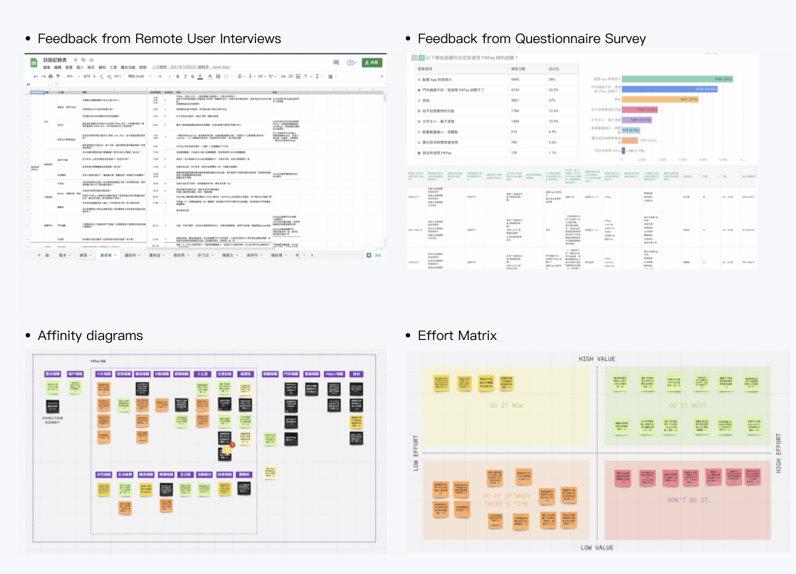
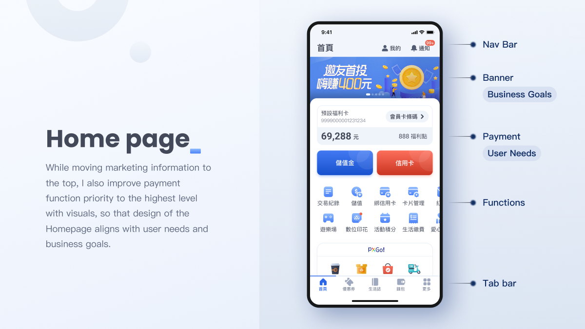
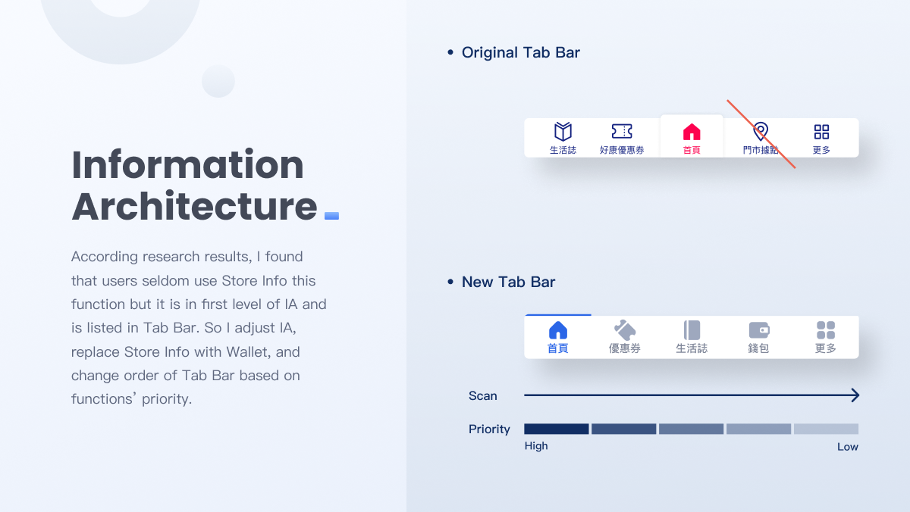
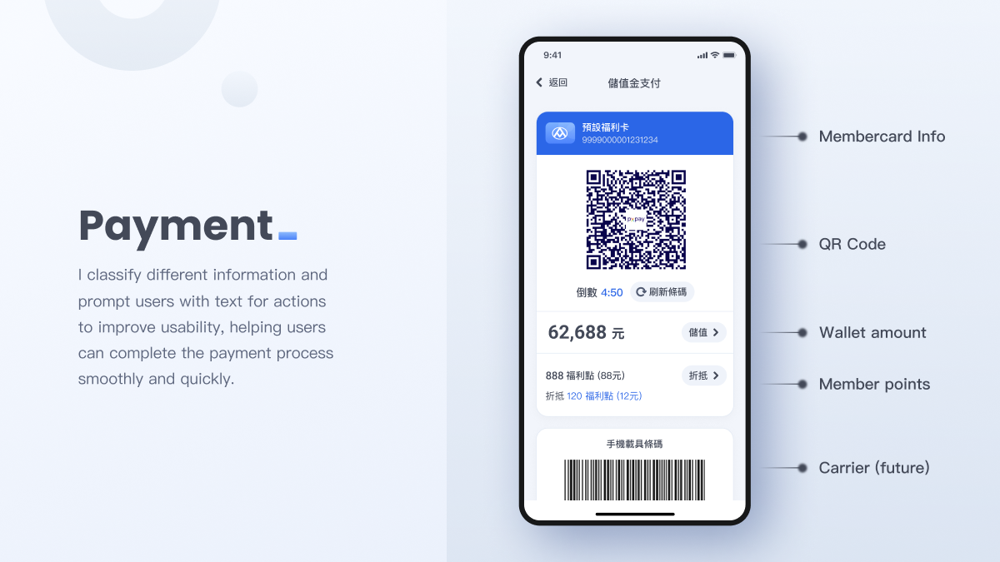
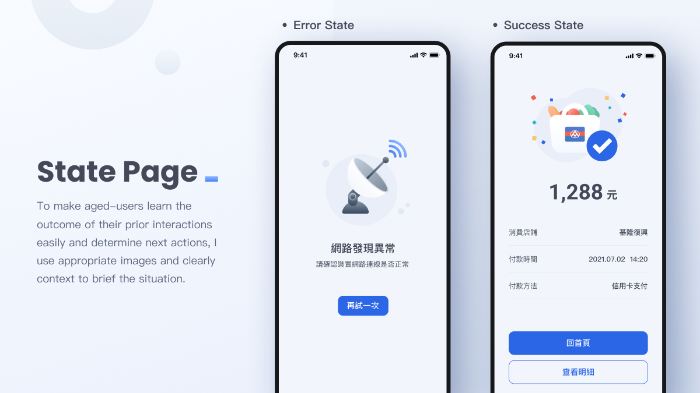

PXMart, which is a chain supermarket, was established in Taiwan in October 1998. At present, it has the largest number of branches among all supermarkets in Taiwan.
In 2019, PXMart launched PXPay, which is the mobile payment for use in the PXMart. Based on its large scale of business, PXPay has about 4 million MAU, and its target user is 45-55 years old female office worker.
In 2021, PXMart established a new department for taking PXPay back from outsourcing. I joined the team and collaborated with the product owner, product managers, engineers to iterate the product.
Designer team of 1
Deliver research report, UX Flow, UI Mockup, UI Spec, and prototypes for projects of optimizations and new features
10 Months
Figma

01 - Import Figma
02 - Design process in Scrum
01 - Research Goals
02 - Research methods
03 - Persona
04 - Insights
01 - Why need a redesign plan?
02 - What problems do we want to solve first in First Phase?
03 - Design Solutions
04 - Next Steps
01 - Overview
02 - Challenges
03 - Design Process
04 - Storyboard
05 - Internal usability Test
06 - Final Design
07 - Deliver
I proposed to my manager for Figma as the only UXUI designer on the new team. The proposal includes :
In addition, to promote this tool to the whole product team, I share the plugin list and teach PM some tips like AutoLayout and shortcuts in the workshop.
(Reference : Figma Official Site, 當產品開發遇上Figma)

When our team decided to use Scrum as a framework, for our development process to run smoothly, I proposed some suggestions about the design in Scrum to PM and Scrum Master.

I conducted research with PM, the objectives we set for our research were as follows:
We executed this UX research with following research methods to achieve different goals.
We interviewed stakeholders from marketing and business departments.

We found 6 apps of mass merchandising or retailing to analysis.

We posted Questionnaire Survey on message of PXPay, we got 14,063 valid questionnaires finally.

We invited 16 individuals based on their answers from the Questionnaire Survey before and interviewed them by remote 1:1 interviews.

Based on the insights gathered by Questionnaire Survey and Remote User Interviews, I found that some facts of users are different from Fictional Personas I assumed before. For example, I believed the majority of our users are 45-55 housewives originally but the result of the research shows that they are more 45-55 female office workers. So I began to revise and develop a new persona highlighting users’ goals and frustrations.
After research, we reviewed the notes, statements, and concepts that align with the research goals and questions. We used an affinity diagram for thematic analysis of users' needs and pain points then defined priority with Effort Matrix.
I found many pain points feedback from users in research is the fundamental problem that could be considered as UXUI Debt. I listed them and referred to Nielsen Norman Group’s article to categorize them into the following categories, and this helped my team better understand :
(contrast, visual focus indicators, text alternatives, etc.)
(navigation structures and content classification)
(labels, headlines, and written text)
(buttons, links, and visual styling)
Based on UXUI debt analyzed from the research and our Heuristic Evaluation, PXPay has many fundamental problems that need to be planned comprehensively, it’s different from single-function optimization or adding a new feature.
We found many inconsistent designs in PXPay, for example, Tab Bars have three types. These might cause users to be confused and misunderstanding components mean different things.
Without a complete design system (Style Guide), it's easy to cause different designers to deliver inconsistent designs to engineers, so it would cause the maintain difficulty.
Because every department wants to get more exposure on PXPay's homepage, the content is planned too many and complicated. Besides, the information isn’t defined priorities, so it causes the user cognitive overload, then users might not quickly identify important information or find the required function.
When the priority is not defined and considered, moreover, each information is important to the user, it would be difficult to convey the marketing activities and features that PXPay wants to emphasize to the user.
Referring to the concept of Universal Design, in addition to designing from the perspective of ordinary users, we should consider people of all ages and abilities. Furthermore, the main users of PXPay are middle-aged and elder, so interface design should be considered about the two fundamentals of readability and usability to design a senior-friendly app.
While moving marketing information to the top, I also improve payment function priority to the highest level with visuals, so that design of the Homepage aligns with user needs and business goals.
According research results, I found that users seldom use Store Info this function but it is in first level of IA and is listed in Tab Bar. So I adjust IA, replace Store Info with Wallet, and change order of Tab Bar based on functions’ priority.
I classify different information and prompt users with text for actions to improve usability, helping users can complete the payment process smoothly and quickly.
To make aged-users learn the outcome of their prior interactions easily and determine next actions, I use appropriate images and clearly context to brief the situation.
Because a imperative new feature related to the whole company need to be developed first, we forced to suspend the project and waiting to includes new features then continue.
We will observed data after launch for a while and considering remaining UXUI debt to plan next phase adjustment.
This project is for allowing users to store value in Stimulus Vouchers and attract them consumption in PXMart, to seize the business opportunities of Quintuple Stimulus Vouchers.
(Oct.8 - Dec.8, 2021)
Stored value amount (NT$)
Payment amount (NT$)
Use paper Stimulus Vouchers to add money to "PXMart's Stimulus Money" and pay by it immediately
Use "PXMart's Stimulus Money" for payment

Because of the tight deadline, after designing the first version of the Prototype, I find colleagues in the department close to our target user group to help with usability testing to save time.

According to the feedback from testing, I iterated the design to solve problems.


I deliver UX Flow, UI Mockup, UI Spec, Prototype to help development teams easily understand every detail, so they could develop smoother. Besides, I also help the designer of the marketing department to replace the visual style with the main campaign style that they needed.